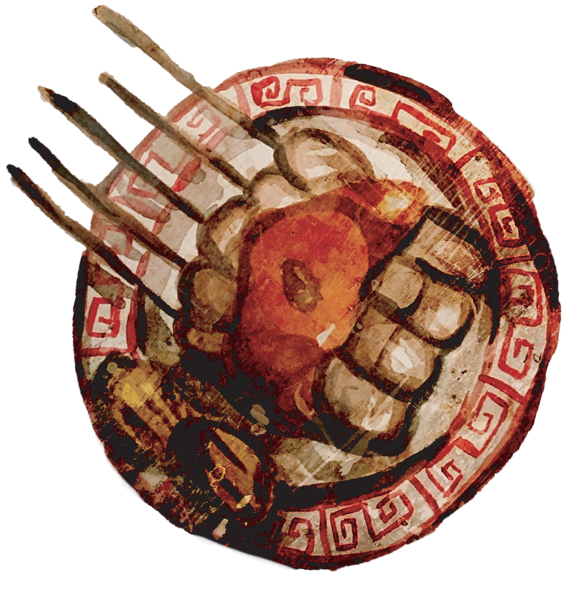

Origin: Jakarta
Sate Taichan is a variation of chicken satay from Indonesia which is served without peanut sauce or sweet soy sauce and grilled for a little while only or until the chicken meat is thoroughly cooked but still plain white in color. The chicken meat is seasoned lightly with very simple ingredients (garlic, ginger, coriander, salt, pepper and lemon juice) before grilling and served with special chili sauce and more lime juice. This type of satay is actually was just invented a few years ago but it is slowly gaining its popularity everywhere in Indonesia and can we easily find this satay Indonesia (especially at night in Jakarta).